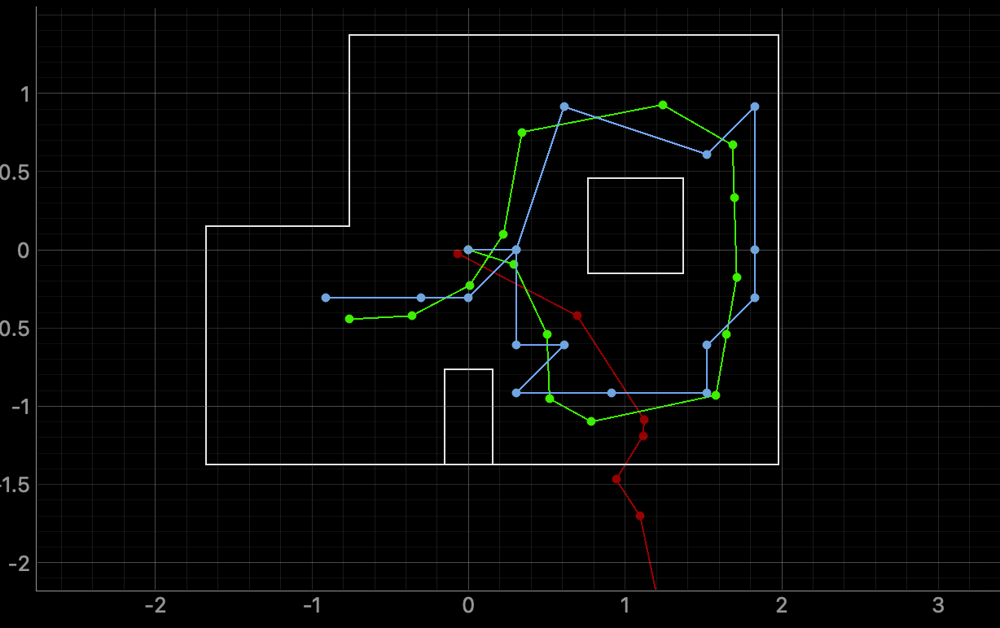
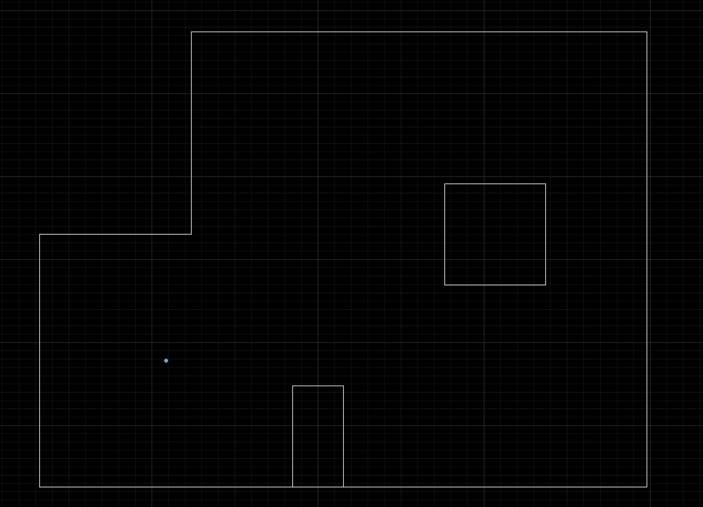
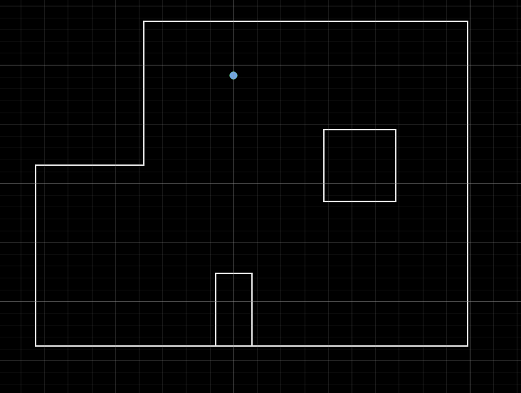
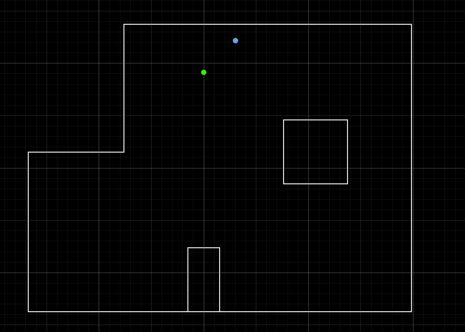
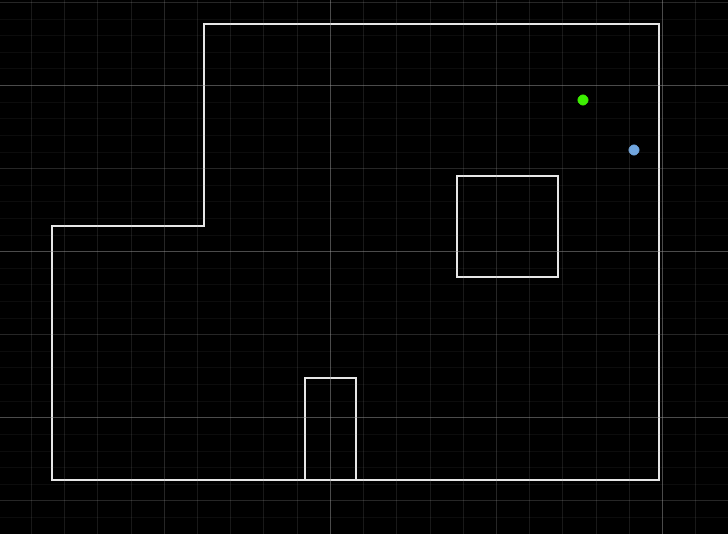
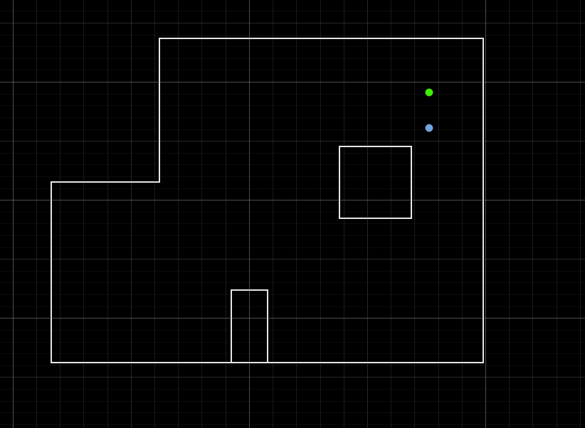
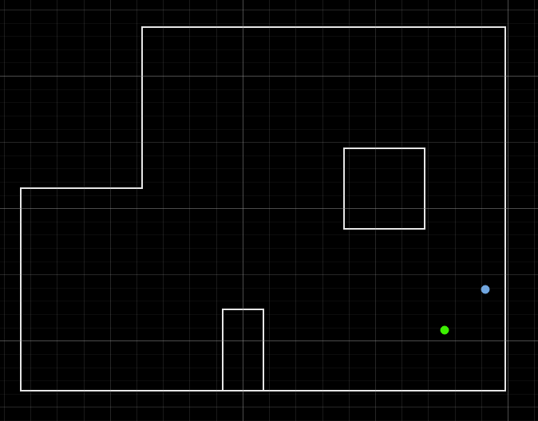

Localization in Simulation
I ran the Bayes filter update step in simulation first using lab11_sim.ipynb. The plot below shows odometry, ground truth, and belief. The belief tracks the ground truth closely, which confirmed the sensor model and grid setup were working before moving to the real robot.

perform_observation_loop Implementation
The perform_observation_loop function triggers the SCAN case on the Artemis over BLE, waits for 18 readings to arrive, then packages them into the numpy arrays the filter expects. The command "19|20" sends 19 steps at 20 degrees each for one full rotation. Only the first 18 readings are used to match the filter's 18-bearing sensor model. I used only the tof1 sensor readings as the range input, since tof1 is the front-facing sensor and working with that sensor exclusively gave me the best results for localization given the pre-made functions.
The notification handler fills a shared buffer keyed by yaw, tof1, and tof2. The async loop polls the buffer every 100ms with a 60 second timeout, then converts distances from mm to meters before returning.
scan_buffer = {"yaw": [], "tof1": [], "tof2": []}
def scan_notification_handler(uuid, bytes):
s = bytes.decode("utf-8").strip()
if not s.startswith("SCAN:"):
return
try:
parts = s[len("SCAN:"):].split(",")
if len(parts) != 3:
return
scan_buffer["yaw"].append(float(parts[0]))
scan_buffer["tof1"].append(float(parts[1]))
scan_buffer["tof2"].append(float(parts[2]))
print(f"yaw={parts[0]}, tof1={parts[1]}, tof2={parts[2]}")
except Exception as e:
print("Notification parse error:", s, e)
def perform_observation_loop(self, rot_vel=120):
async def _scan():
scan_buffer["yaw"].clear()
scan_buffer["tof1"].clear()
scan_buffer["tof2"].clear()
self.ble.start_notify(self.ble.uuid['RX_STRING'], scan_notification_handler)
self.ble.send_command(CMD.SCAN, "19|20") # 19 steps, 20 deg each
timeout = 60
elapsed = 0
while len(scan_buffer["tof1"]) < 18 and elapsed < timeout:
await asyncio.sleep(0.1)
elapsed += 0.1
self.ble.stop_notify(self.ble.uuid['RX_STRING'])
if len(scan_buffer["tof1"]) < 18:
raise RuntimeError(
f"Only received {len(scan_buffer['tof1'])} readings before timeout"
)
sensor_ranges = np.array(scan_buffer["tof1"][:18]).reshape(-1, 1) / 1000.0
sensor_bearings = np.array(scan_buffer["yaw"][:18]).reshape(-1, 1)
return sensor_ranges, sensor_bearings
return asyncio.get_event_loop().run_until_complete(_scan())
The SCAN command calls RPID at each step to rotate 20 degrees, averages 4 ToF readings per stop, and transmits each line as "SCAN:yaw,tof1,tof2". This is the exact same SCAN case from Lab 9 with zero alterations. The notification handler appends into the shared buffer and perform_observation_loop waits on buffer length to know when the scan is complete.
Localization Results by Position
The update step was run once at each of the four marked poses. The green dot shows the filter belief and the blue dot shows the ground truth. The Lab 9 scan for the same physical location is shown alongside each result for reference.
Position (-3, -2)
This was the most consistently accurate result. The position is far from the box. The belief landed at or very close to the correct cell on every run.

Lab 9 scan, robot frame (2, -3)

Bayes filter belief, world frame (-3, -2)
Position (0, 3)
This position was mostly correct with occasional failures. It sits closer to the box, so some scan angles return shorter readings off the object rather than the walls. Since the object was difficult fo rthe sensors to detect as shown by the lab 9 scans, relying on those readings from the box made the localization less reliable. This introduces enough ambiguity to occasionally pull the belief to the wrong cell.

Lab 9 scan, robot frame (-3, 0)

Correct result, world frame (0, 3)

Incorrect result, world frame (0, 3)
Position (5, 3)
This was harder to localize accurately. Multiple scan angles hit the box at short range, producing readings the sensor model cannot explain from the true pose, so the belief committed to a nearby wrong cell on both runs.

Lab 9 scan, robot frame (-3, 5)

Incorrect result, world frame (5, 3)

Incorrect result, second run, world frame (5, 3)
Position (5, -3)
This position had the same difficulty as (5, 3). Proximity to the box caused the belief to land away from the true cell consistently.

Lab 9 scan, robot frame (3, 5)

Incorrect result, world frame (5, -3)
Full Map Reference
The combined Lab 9 world-frame map below shows the box cluster clearly. Points from the (5, 3) and (5, -3) scan positions overlap heavily with the object geometry, which is why the filter struggles to uniquely identify those cells. Short object returns reduce the likelihood of the correct cell relative to nearby alternatives.

Discussion
Localization accuracy tracked closely with distance from the box. Position (-3, -2) was consistently correct, (0, 3) was mostly correct, and (5, 3) and (5, -3) failed regularly. The box introduces scan readings the sensor model assigns low likelihood to from the true pose, which lets neighboring cells outscore the correct one. The left-right friction asymmetry noted in Lab 9 also causes the robot to drift slightly off-axis during each rotation, adding a small systematic heading error the filter cannot correct for.
References
I used AI assistance to help structure this write-up and check syntax.